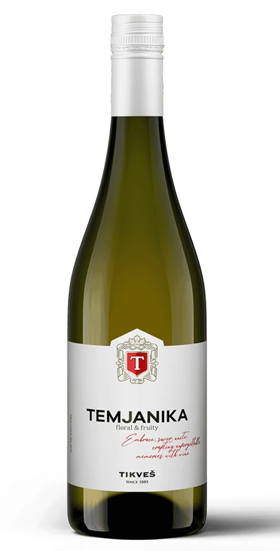

Follow the Vardar south from Skopje and you reach the country’s principal wine region. Its best-known district, Tikveš, lies around Kavadarci and Negotino, where the dark-skinned Balkan grape Vranec goes into both single-variety wines and blends. Two other regions complete the national picture: Pelagonija–Polog to the west and Pčinja–Osogovo to the northeast. The map puts their vineyard districts in relation to the river, the western basins, and the northeastern mountains.
Wine regions
1. Vardar Valley
Also called Povardarie, this wine region follows the river from Skopje through Veles toward Negotino and Demir Kapija. The Tikveš district is centered on Kavadarci and Negotino.
2. Pelagonija–Polog
The western wine region includes the districts around Bitola, Prilep, Prespa, and Ohrid. The region’s plateaus and mountain valleys have colder winters than the central Vardar Valley.
3. Pčinja–Osogovo
The northeastern wine region includes Kumanovo, Kratovo, and Pijanec. Its vineyards occupy mountain slopes, some as high as 850 meters according to Wines of Macedonia.
Grape varieties
- Vranec
- A dark-skinned variety known as Vranac in Montenegro. Its wines typically have deep color, dark-fruit aromas, and firm tannins.
- Kratošija
- A red variety also known as Zinfandel or Primitivo. It is blended with Vranec in Barovo Red.
- Stanušina
- A Macedonian red grape used for red wine and rosé. Popova Kula produces a dry Stanušina rosé.
- Smederevka
- A white grape long grown in the region, used for light dry wines with green-apple or citrus notes.
- Temjanika
- An aromatic white grape associated with floral and fresh-grape aromas. Tikveš bottles Muscat Blanc à Petits Grains under the Temjanika name.
Selected wines
Three bottles show how much a designation on a label can tell you. Temjanika is a dry white Muscat. The two reds both use Vranec, but the dry bottling from Lepovo and the semi-dry T’ga za jug give the grape different expressions.

Temjanika
Tikveš · Dry whiteTikveš describes elderflower, fresh grapes, and citrus in this dry Muscat.

Vranec
Bovin · Dry redA single-variety Vranec from Lepovo in the Tikveš district. Bovin describes red fruit and berry aromas.

T’ga za jug
Tikveš · Semi-dry redA semi-dry wine from late-harvest Vranec. Tikveš describes sour cherry, raspberry, and raisin aromas.
Wine labels
“Vranec” and “T’ga za jug” answer two different questions at the wine shelf. Vranec identifies the grape. T’ga za jug is the name Tikveš gave a wine made from it. A place name can be just as prominent as either: Lepovo is a vineyard site in the Tikveš district, and Tikveš itself is the name of both the district and a producer.
- Producer
- Tikveš is the name of both a winery in Kavadarci and the surrounding wine district.
- Grape or blend
- A wine named for its vineyard, such as Barovo Red, may contain several varieties. The producer’s technical sheet lists the proportions for a given vintage.
- Style
- Suvo (dry) and polusuvo (semi-dry) describe sweetness. Crveno (red) and belo (white) describe color.
- Vintage
- The year the grapes were harvested. Blend proportions and aging details can vary by vintage.
Viticulture and local traditions
In Kavadarci, the first cuts of pruning can be part of the feast of Sveti Trifun on February 14. A study of the custom in Tikveš records growers pouring wine and rakija over freshly pruned vines in the hope of a good harvest.
After postwar trials near Skopje showed that Vranec could produce high yields, growers planted it more widely during the Yugoslav period. In 1973, the Tikveš winery made a Vranec for the Struga Poetry Evenings. The wine took its name from Konstantin Miladinov’s “Longing for the South.”
Vranec
The grape’s history and characteristics, with a vineyard map and a comparison of Barovo Red and Bela Voda Red.
Sources
- Wines of Macedonia, wine regions and Tikveš wine district.
- Wines of Macedonia, profiles of Vardar Valley, Pelagonija–Polog, and Pčinja–Osogovo.
- Zvonko Herceg, “Discovering Vranec and North Macedonia,” WSET, 2021.
- Bovin, Vranec. Popova Kula, Stanušina Rosé.
- Tikveš, Temjanika, Smederevka, and T’ga za jug.
- Tikveš, technical sheets for the 2019 Barovo Red and Bela Voda Red.
- Municipality of Kavadarci, Sveti Trifun and local festivities.
- Bojana Samardžieva and Ana Vitanova-Ringačeva, account of ritual pruning in Tikveš, Goce Delčev University, 2021.